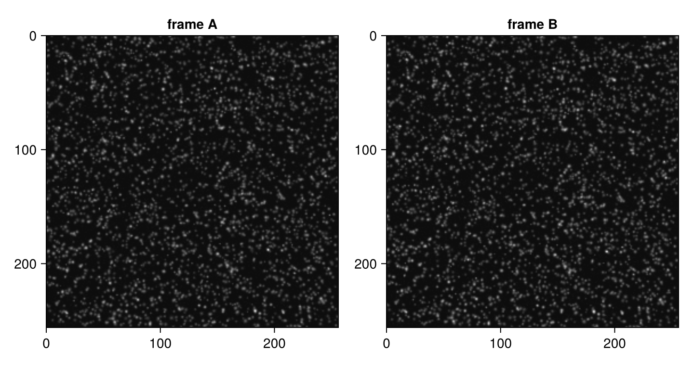
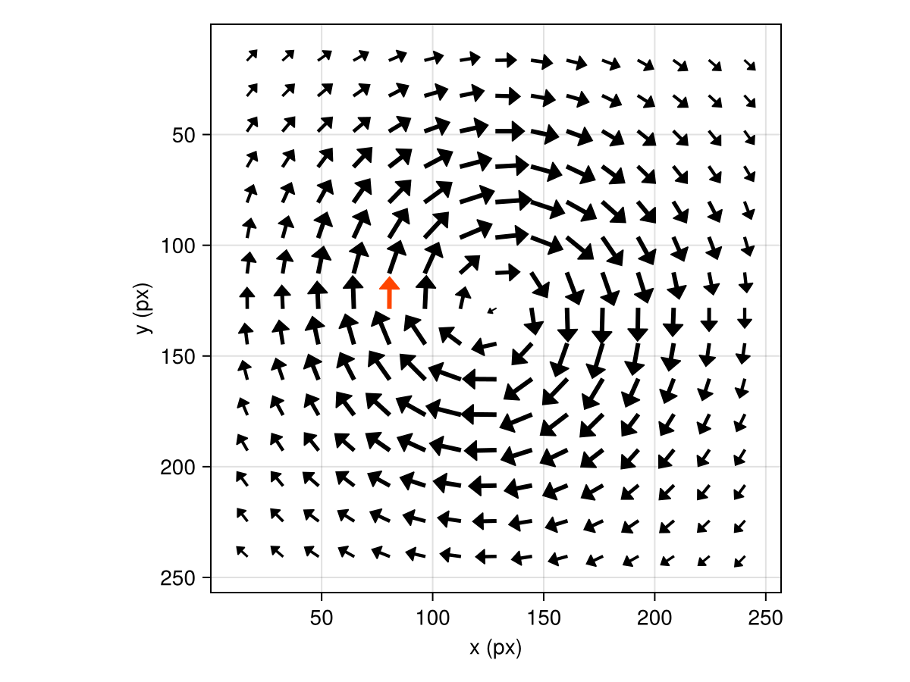
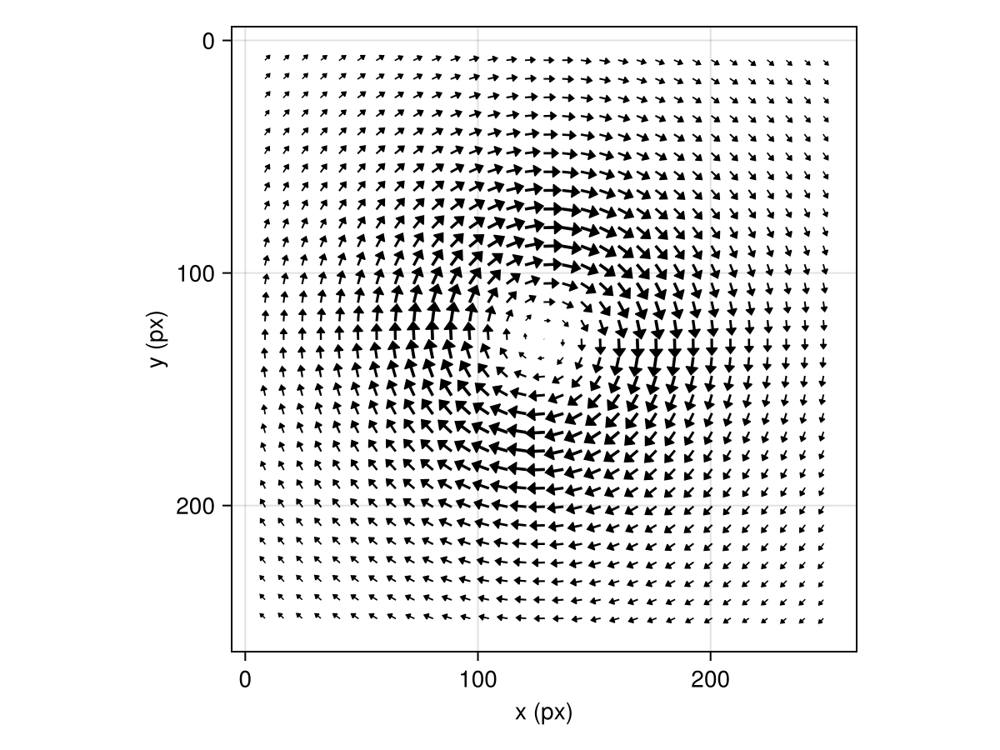
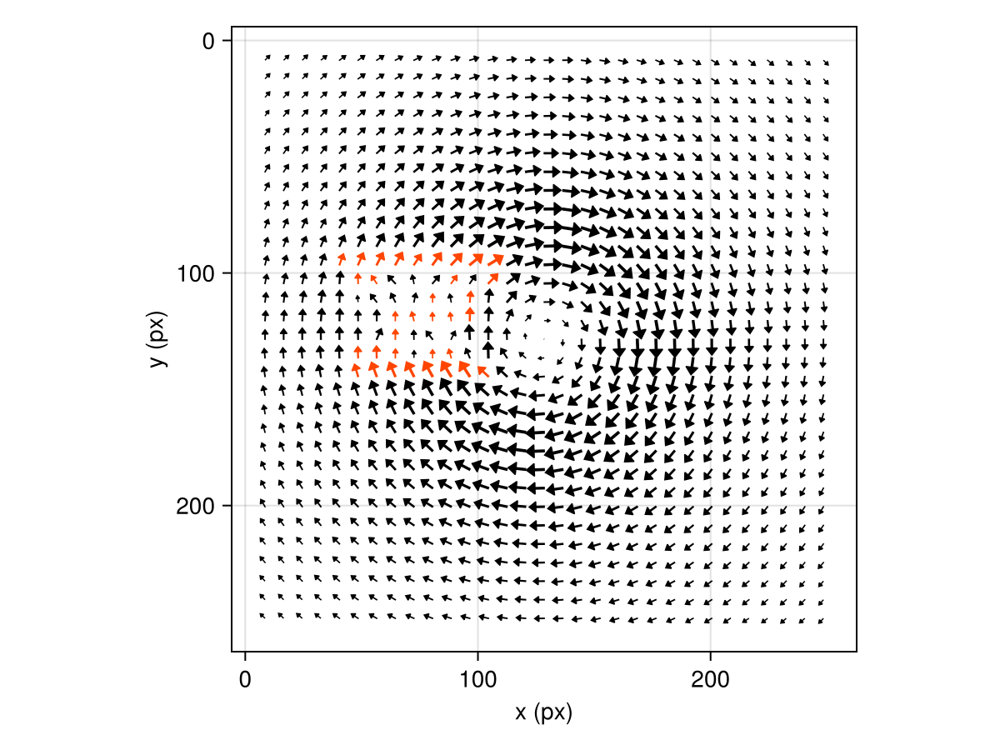
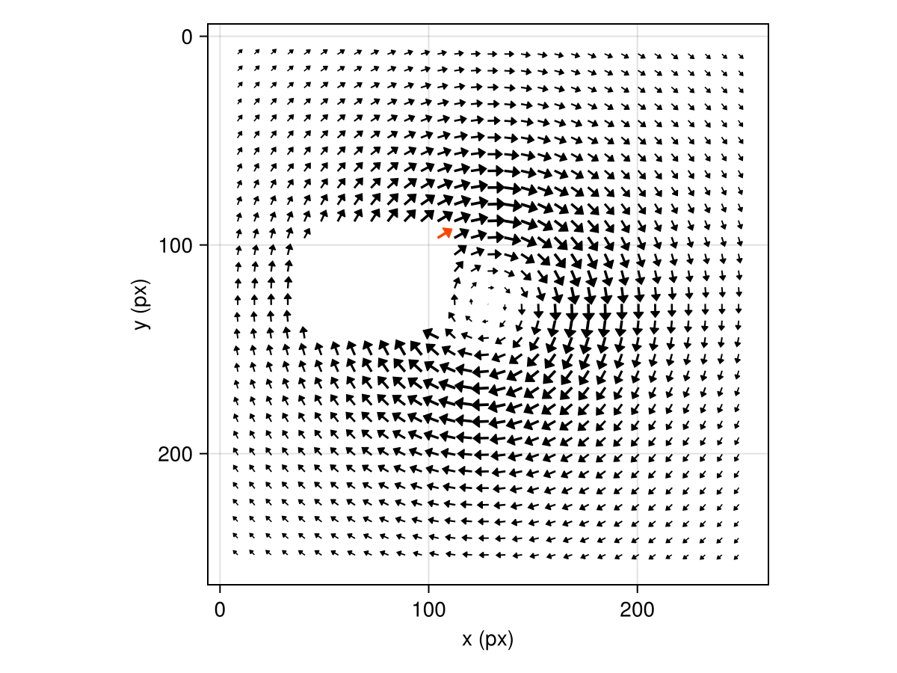

Your first vector field
This tutorial takes you from a pair of particle images to a validated, uncertainty-quantified velocity field. Everything is synthetic and self-contained: we generate the images ourselves, so we know the true flow and can check every claim the analysis makes.
Generate a synthetic image pair
Particle image velocimetry (PIV) measures displacement between two images of a flow seeded with small tracer particles. A short light pulse freezes the particles in each exposure; their pattern shifts between exposures as the fluid moves. Hammerhead's SyntheticData submodule renders such image pairs from a prescribed velocity field, displacing each particle by its local velocity times $\Delta t$ — so the ground truth is known exactly.
A velocity field is any function (x, y, z, t) -> (u, v, w). Ready-made fields exist (vortex_flow, shear_flow, linear_flow); here we write a Lamb–Oseen vortex — a viscous vortex with a smooth core — by hand:
using Hammerhead
using Hammerhead.SyntheticData
using Random
center = (128.0, 128.0)
rc = 40.0 # core radius, px
Γ = 1200.0 # circulation, px² per frame interval (≈3 px peak displacement)
function flow(x, y, z, t)
dx, dy = x - center[1], y - center[2]
r² = dx^2 + dy^2
k = r² < 1e-9 ? Γ / (2π * rc^2) : Γ / (2π * r²) * (1 - exp(-r² / rc^2))
return (-k * dy, k * dx, 0.0)
end
rng = MersenneTwister(42)
imgA, imgB, particles1, particles2 = generate_synthetic_piv_pair(
flow, (256, 256), 1.0;
particle_density = 0.05, # particles per pixel
background_noise = 0.03, # sensor noise level
z_range = (-1.0, 1.0), # keep particles inside the laser sheet
rng,
)
size(imgA), extrema(imgA)((256, 256), (0.0, 2.704669243197932))A quick look at the pair (with real data, you would start from load_image("frame_0001.tif") instead):
using CairoMakie
let
fig = Figure(size = (720, 380))
for (i, (img, title)) in enumerate(((imgA, "frame A"), (imgB, "frame B")))
ax = Axis(fig[1, i]; title, yreversed = true, aspect = DataAspect())
image!(ax, img'; colormap = :grays)
end
fig
end
Run a basic analysis
run_piv tiles the images into interrogation windows, correlates each window pair, and refines every correlation peak to subpixel precision. With no configuration it runs a single pass of 32×32 windows at 50% overlap:
result = run_piv(imgA, imgB)PIVResult{Float64}(15×15 grid, 1 outliers)An interrogation window is a small image region containing several particles. Correlation finds the shift that best aligns its particle pattern between frames, so each window produces one representative displacement vector rather than one vector per particle.
The PIVResult holds the interrogation grid (x along columns, y along rows, in pixels) and the displacement fields (u along x, v along y — a particle at (row, col) in frame A is found at (row + v, col + u) in frame B). The Makie extension plots it directly:
plot_vector_field(result)
Multi-pass with image deformation
One pass leaves accuracy on the table. A multi-pass schedule starts with large windows, then uses each pass's validated field to deform the images before the next, finer pass — so late passes only measure a small residual and can afford small windows. Two more switches, padding and apodization, remove the systematic bias of plain fast Fourier transform (FFT) correlation (see Correlation accuracy). This is the recommended configuration for real work:
passes = multipass_parameters([64, 32, 16, 16];
padding = true,
apodization = :gauss,
uncertainty = true, # per-vector uncertainty, estimated on the final pass
)
result = run_piv(imgA, imgB, passes)PIVResult{Float64}(31×31 grid, 0 outliers)plot_vector_field(result)
Twice the spatial resolution (16 px windows instead of 32), and — as we're about to verify — much better accuracy. Note the schedule [64, 32, 16, 16]: repeating the final window size adds a convergence sweep, which the uncertainty estimator requires (it assumes the deformation has converged).
Check against the ground truth
The generator displaces each particle by its velocity at the launch point, while symmetric image deformation attributes each measured vector to the midpoint of the particle trajectory (that midpoint attribution is what makes the scheme second-order accurate — see Multi-pass interrogation). To compare like with like, we evaluate the reference velocity at the launch point x - d/2, and hand the reference fields to error_statistics:
midpoint_reference(r) = (
[flow(x - r.u[i, j] / 2, y - r.v[i, j] / 2, 0.0, 0.0)[1]
for (i, y) in enumerate(r.y), (j, x) in enumerate(r.x)],
[flow(x - r.u[i, j] / 2, y - r.v[i, j] / 2, 0.0, 0.0)[2]
for (i, y) in enumerate(r.y), (j, x) in enumerate(r.x)],
)
u_ref, v_ref = midpoint_reference(result)
err = error_statistics(result, u_ref, v_ref)
(bias_u = err.bias_u, rms_u = err.rms_u, rms_v = err.rms_v, n = err.n)(bias_u = -0.0004108351467191813, rms_u = 0.028949834349277358, rms_v = 0.029432013273702345, n = 961)About 0.03 pixels (px) of root-mean-square (RMS) error and negligible bias over the whole field — this is what the padded, apodized, multi-pass configuration is for. For comparison, plain un-padded single-pass correlation carries a systematic bias of ~0.15 px on its own.
Per-vector uncertainty
With uncertainty = true, the final pass estimates each vector's random error from correlation statistics (Wieneke 2015) into uncertainty_u / uncertainty_v. The median estimate should sit at the noise-driven share of the root-mean-square error we just measured — without ever seeing the ground truth:
using Statistics: median
valid = .!(result.outliers .| result.mask)
σu = filter(isfinite, result.uncertainty_u[valid])
(median_uncertainty_u = median(σu), measured_rms_u = err.rms_u)(median_uncertainty_u = 0.015752903511062382, measured_rms_u = 0.028949834349277358)The estimator captures the random error of each correlation; the remaining gap to the measured RMS is residual deformation error that no per-window estimator can see. See Uncertainty quantification for what the numbers mean and when to trust them.
Outliers, validation, and masking
So far the data was clean and validation had nothing to do (count(result.outliers) == 0). Real recordings are not so kind. Let's simulate a saturated reflection — a bright static patch in both frames:
imgA_refl, imgB_refl = copy(imgA), copy(imgB)
for img in (imgA_refl, imgB_refl)
img[97:144, 41:104] .= 1.0
end
result_refl = run_piv(imgA_refl, imgB_refl, passes)
count(result_refl.outliers)34A static reflection correlates perfectly with itself, producing confident zero vectors that disagree with their neighbors — exactly what the default validation (universal outlier detection plus peak-ratio checks) is built to catch. Flagged vectors are replaced by the local median of their valid neighbors (replace_outliers = true), and the flag tells you which values are interpolated rather than measured:
plot_vector_field(result_refl)
Validation is damage control, not a fix: windows partially covering the patch produce subtly biased vectors that can survive the tests. Since we know where the reflection is, the right tool is a mask — the region then produces no vectors at all and cannot contaminate its neighbors' validation, replacement, or statistics:
mask = falses(size(imgA))
mask[97:144, 41:104] .= true
result_masked = run_piv(imgA_refl, imgB_refl, passes; mask)
u_ref, v_ref = midpoint_reference(result_masked)
err_masked = error_statistics(result_masked, u_ref, v_ref)
(rms_u = err_masked.rms_u,
outliers = count(result_masked.outliers),
masked = count(result_masked.mask))(rms_u = 0.04832566777437437, outliers = 1, masked = 59)Full accuracy is restored around the (now vector-free) masked region. result.mask records the dropped windows — deliberately kept distinct from result.outliers (see The masking model):
plot_vector_field(result_masked)
Where to go next
- The same workflow on a real wind-tunnel recording, where there is no ground truth to check against: the real-data tutorial.
- Real image files:
load_imageand the batch-processing guide. - Polygon and image-file masks: the masking guide.
- When the defaults flag too much or too little: Tune validation.
- Noisy recordings: the preprocessing and ensemble-correlation guides.
- Two cameras: the stereo tutorial.
This page was generated using Literate.jl.